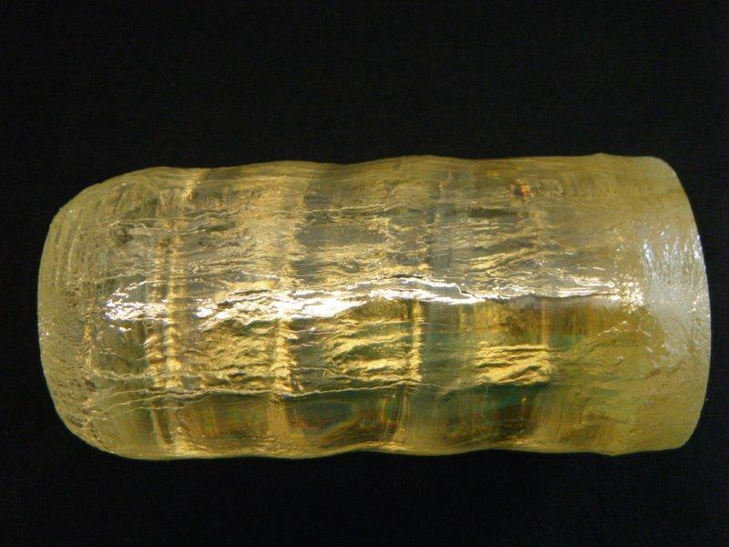
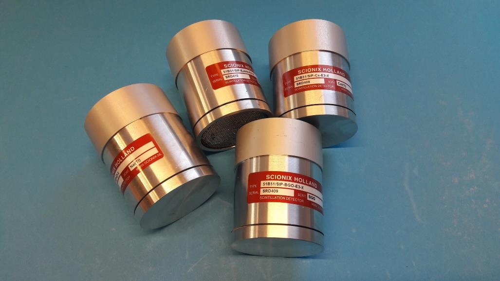
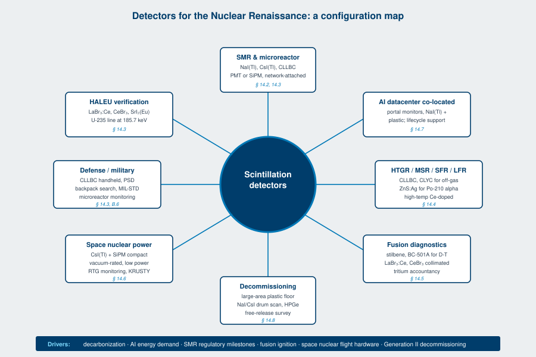

For most of the period covered by the first edition of this book, nuclear power was a steady-state market. Existing reactors operated, occasionally got license extensions, occasionally got decommissioned. New construction in the West was rare, expensive, and politically contested. Detector demand from the power-reactor segment was a slow, predictable trickle of replacements and upgrades.
That is not the market the second edition is being written into.
This chapter is about what changed, why scintillation detectors specifically benefit, and what gets built where. It is the most forward-looking chapter in the book and the one most likely to age. The fundamentals in Chapters 2 through 9 will read the same in 2040. Chapter 14 is a snapshot.
Three forces aligned over the period 2022 to 2026.
Decarbonization needs firm power. The grid integrations of wind and solar in Europe, the United States, and parts of Asia ran into the problem the engineers warned about in the 2010s: variable renewables alone do not balance a grid. The fastest path to a low-carbon grid that runs at three in the morning in February is nuclear.
AI energy demand outran the build rate of any other source. Hyperscale datacenter operators in the United States signed power purchase agreements in 2024 totaling more new capacity than the average annual addition of any single energy source in the country. The buildout was not theoretical. Microsoft signed a long-term offtake of the Three Mile Island Unit 1 restart in late 2024. Amazon Web Services signed a co-location agreement at the Susquehanna nuclear station. Google contracted with Kairos Power for small modular reactor capacity. By 2025, every hyperscale operator had either announced a nuclear PPA or was rumored to be negotiating one.
Small modular reactor designs reached regulatory milestones. NuScale's design received US Nuclear Regulatory Commission certification in 2023. The first SMR construction project on US soil broke ground in 2025. Microreactor pilots, X-energy, Oklo, BWXT, US Department of Defense Project Pele, moved from paper to fabrication. Canada, Romania, and Poland announced NuScale and BWRX-300 deployments. The deployment curve is real, the timelines are still slow by software standards, and the volume is growing.
The detector implications follow from those three sentences. More reactors mean more containment monitoring, more spent-fuel monitoring, more workforce dosimetry, more transportation security, more decommissioning eventually. Smaller reactors with distributed siting mean detectors that are smaller, more numerous, and closer to AI workloads with their own monitoring needs. Faster construction cycles mean faster procurement cycles. Higher public scrutiny means stronger demand for tamper-evident, network-attached, real-time radiation monitoring.
That is the market. The rest of this chapter is the engineering.
Going Deeper - The energy economics in one paragraph
Levelized cost of electricity for first-of-a-kind small modular reactors is roughly 90 to 130 USD per MWh in early deployments, dropping toward 60 USD per MWh as nth-of-a-kind effects accumulate. Levelized cost of storage to firm intermittent renewables to comparable availability is currently 100 to 200 USD per MWh per cycle, depending on duration. The crossover is what made hyperscale operators willing to pay a nuclear premium per kWh for guaranteed firm power. For the detector engineer, the implication is that the people writing the procurement orders treat reactor capacity as scarce and time-critical, and they treat the supporting instrumentation as a critical path item, not an afterthought.

A small modular reactor is, for our purposes, a light-water or gas-cooled fission reactor with electrical output in the 50 to 300 MWe range, designed for factory fabrication of major components, transport to site, and modular installation. The Generation IV designs (molten salt, sodium-cooled, lead-cooled) overlap the SMR category but are usually treated separately because the coolant and fuel chemistry are radically different.
The detector locations on an SMR fall into roughly six zones.
Reactor pressure vessel and primary loop area. Local high-temperature, high-flux environments around the vessel where you want neutron and gamma flux maps for control. Traditional fission chambers and self-powered neutron detectors carry most of the flux mapping load, but scintillation detectors enter for the gamma side of source range monitoring and for radiation-portal-style monitoring of the primary loop tap-off lines.
Spent fuel pool and dry cask storage. Lower flux, larger geometry, more conventional scintillation territory. NaI(Tl), CsI(Tl), and CLLBC detectors monitor pool water activity, off-gas activity, and intrusion into restricted areas. SMR designs with passive cooling and integrated fuel handling change the geometry of the pool monitoring, and several SMR vendors have specified detector arrays rather than single survey points.
Containment boundary. Continuous air monitors, gas monitors, and area gamma monitors. The containment of an SMR is typically smaller and simpler than a Generation II light-water reactor containment, which means the detector layout is denser and more topologically constrained. Bus-mounted area monitors with network reporting are the dominant form factor.
Reactor building and balance of plant. Effluent monitoring, workforce dosimetry stations, criticality alarms (where applicable), and an array of fixed-point area monitors. Largely standard scintillation detector territory. The detector mix is similar to Generation II plants, scaled to the smaller building footprint.
Site boundary and stack. Effluent stack monitoring, environmental radiation monitoring posts, off-site dose calculation inputs. Outdoor-rated, weather-sealed, often solar-powered with cellular telemetry. NaI(Tl) and CsI(Tl) probes dominate, with some CLLBC for the dual gamma-neutron sites.
Transportation. Shipping casks, fresh fuel deliveries, spent fuel transport. Portal monitors at site entrances, in-transit monitors on the casks themselves, and law-enforcement handhelds at the receiving end. The reduced fuel inventories of SMR designs change the optimal portal monitor sensitivity, and several SMR programs have specified handhelds that prioritize neutron sensitivity for the high-enriched fuels.
The detector volume per SMR is smaller than the volume per Generation II reactor in absolute terms, but the detector count per megawatt is higher, and the density of network-attached, real-time-reporting detectors is much higher. The aggregate market grows. The mix shifts toward smaller, more numerous, more digital units.
Microreactors are SMRs taken further: 1 to 20 MWe, fully factory-built, designed for transport on a standard tractor-trailer or a C-17, often intended for forward-operating bases, mining sites, remote communities, or as portable backup power. The US Department of Defense Project Pele, the Oklo Aurora, and the BWXT BANR sit in this class. Some Generation IV designs at the small end of their range qualify as microreactors.
The detector requirements compound the SMR list with three additional pressures.
Self-monitoring with minimal operator presence. A microreactor at a remote mine site may have no on-site nuclear-trained staff. Detector data is reported to a central operations center over satellite or cellular link. The detectors themselves have to be self-calibrating, self-diagnosing, and capable of distinguishing between a real radiation event, a malfunction, and a tamper attempt without human review. SiPM-coupled scintillators with embedded digital pulse processors and onboard temperature compensation are the dominant form factor.
Compact, ruggedized housings. A microreactor designed for airdrop or palletized transport ships with its instrumentation already installed. Detector housings are typically MIL-STD-810 rated for shock, vibration, humidity, and altitude. Standard Scionix ruggedized configurations apply, with custom integration into the reactor skid.
Tamper evidence and physical security. Microreactors deployed in austere environments are presumed to be at higher risk of attempted access by unauthorized parties. Detector housings include tamper-evident seals, position sensors, and continuous integrity reporting. The detector itself becomes part of the security perimeter.
The fuel forms used in microreactors, primarily TRISO (tristructural isotropic) particle fuel and high-assay low-enriched uranium (HALEU), have specific gamma signatures that drive isotope-identification detector specifications. For HALEU monitoring, the detectors of choice are LaBr3:Ce or CeBr3 for the high resolution at the U-235 lines, or CLLBC for combined gamma-neutron monitoring.
Going Deeper - HALEU gamma signatures for detector design
High-assay low-enriched uranium (HALEU) is uranium enriched to between 5 and 20 percent U-235. The dominant gamma lines from HALEU are U-235 at 185.7 keV (1.55 percent of decays) and U-238 daughters from the small natural-abundance fraction still present. The 185.7 keV line is the primary signature for verification and accountancy. A detector intended to confirm HALEU enrichment within fresh-fuel delivery has to resolve this line cleanly against scattered background, which is why high-resolution scintillators (LaBr3:Ce, CeBr3, SrI2:Eu) and small high-purity germanium detectors dominate the application even though NaI(Tl) and CsI(Tl) at lower cost would suffice for simple presence detection.
The Generation IV reactor concepts that have moved off paper into construction or test deployment include high-temperature gas-cooled reactors (HTGR), molten salt reactors (MSR), sodium-cooled fast reactors (SFR), and lead-cooled fast reactors (LFR). Each presents its own detector environment.
HTGR coolant is helium. Coolant activation is low. The dominant gamma sources in the primary loop are tritium from beryllium content in graphite and any released fission products from failed TRISO particles. Scintillation monitoring focuses on stack monitors for tritium and noble gases, plus area monitors around the steam generator and turbine for any tritium leak through the steam cycle. CsI(Tl) coupled to SiPM arrays is the dominant area-monitor architecture.
MSR coolant is the fuel. This is the radical case. Fission products accumulate in the molten fluoride or chloride salt mixture that simultaneously serves as fuel and primary coolant. Online fission product extraction, off-gas treatment, and in-line salt sampling become first-class plant systems with their own dedicated detector arrays. Tritium production in fluoride salts is significant. Detector specifications include high temperature operation (the salt loop runs at 600 to 700 degrees Celsius and the surrounding hardware sits well above ambient), high gamma background from coolant activation, and continuous on-line operation with limited maintenance access. The detector architectures favored to date are CLLBC and CLYC for combined neutron-gamma monitoring of off-gas streams, NaI(Tl) and CsI(Tl) for area monitoring at distance from the loop, and small high-purity germanium detectors for periodic salt-sample analysis in the on-site lab.
SFR coolant is liquid sodium. Sodium-22 and sodium-24 activation products dominate the gamma field around the primary loop. The primary cover gas (argon) carries activation products and any fission product release into a dedicated monitoring stream. Detector specifications include high background gamma rejection, response stability under temperature variation, and intrinsic radiation hardness. Plastic scintillators for fast neutron detection at the cover-gas off-take, combined with NaI(Tl) and CLLBC for the gamma side, is a common pairing.
LFR coolant is liquid lead or lead-bismuth. Polonium-210 production from neutron capture on bismuth is the dominant alpha-active concern, with implications for primary-loop personnel access and decommissioning. Alpha air monitoring with ZnS:Ag-coated screens is the workhorse. Gamma monitoring follows the SFR pattern.
The common thread across all four reactor types: detectors closer to the primary loop face higher temperatures, higher gamma backgrounds, and tighter integration into reactor I&C systems than Generation II light-water reactor detectors did. The trend favors solid-state photodetector readout (SiPM, photodiodes), digital pulse processing on the detector head, and network-attached reporting over analog signal cabling out to a remote MCA.
Fusion energy gain factors above unity were demonstrated at the National Ignition Facility in December 2022 and again in subsequent shots. The follow-on machines, ITER (Cadarache, France), SPARC (Devens, Massachusetts), STEP (United Kingdom), DTT (Frascati, Italy), JT-60SA (Naka, Japan), and a long list of private-sector tokamak and stellarator startups, are under construction. Inertial confinement and magnetic confinement programs are both running, with magnetic confinement carrying the larger share of construction spend.
The detector requirements split into three categories.
Neutron diagnostics. D-T fusion produces 14.06 MeV neutrons at a ratio of one neutron per fusion reaction. Measuring the neutron yield at sub-percent accuracy is the primary diagnostic of fusion performance. Detector technologies include time-of-flight neutron spectrometers using BC-501A liquid scintillator or stilbene crystals coupled to fast PMTs or microchannel plate PMTs, neutron activation analysis using foils read out by HPGe (not a scintillator application but worth knowing), and Cherenkov neutron diagnostics for the highest-yield shots. For the magnetic confinement machines, in-vessel neutron flux monitors using radiation-hard scintillators (CeBr3, CLYC) read out at distance through optical fibers or air-gap optics are an active research area, with results presented at recent IEEE NSS-MIC sessions.
Gamma diagnostics. Fusion plasma gamma emission carries information about plasma impurity composition, runaway electron behavior, and plasma facing component erosion. High-resolution gamma spectrometry on tokamaks uses LaBr3:Ce and CeBr3 detectors collimated to view specific plasma chord locations. The gamma fluxes are modest. The challenges are time resolution and rejection of the dominant 14 MeV neutron-induced background.
Plasma facing component monitoring. Tritium retention in tungsten plasma facing components, neutron-induced activation of structural materials, and erosion product transport into the divertor are all instrumented with combinations of beta detectors, gamma detectors, and tritium-specific air monitors. The ITER tritium accountancy plan alone specifies hundreds of detector installations across the plant.
Going Deeper - 14 MeV neutrons and detector survival
A 14.06 MeV neutron carries enough energy to displacement-damage essentially any solid material, and the neutron flux at a fusion reactor wall is several orders of magnitude beyond a fission reactor wall at equal thermal power. Scintillation crystals in proximity to a fusion plasma fail by accumulated displacement damage measured in displacements per atom (DPA). LaBr3:Ce, CeBr3, and CLYC have been characterized to several DPA in test reactor and accelerator irradiation campaigns reported at SCINT 2022 and SCINT 2024. The conclusion is that direct-view scintillation diagnostics on a fusion power plant are time-limited; they tend to be replaced on a planned schedule rather than expected to operate for the plant lifetime. Optical readout through bent-fiber or air-gap geometries with the scintillator in a survivable location and the photodetector in a shielded location is the standard solution.
Space nuclear power covers two distinct regimes: radioisotope thermoelectric generators (RTGs), which power deep-space probes and rovers, and fission surface power, which the US National Aeronautics and Space Administration and US Department of Energy are developing for lunar and Mars surface deployment.
RTGs, principally the Multi-Mission Radioisotope Thermoelectric Generator (MMRTG) using plutonium-238 dioxide fuel, have flown on Curiosity and Perseverance and are queued for several upcoming missions. The detector implications are limited, mostly: monitoring during ground handling, transport, and integration, plus dosimetry for personnel working near the assembled flight units. Standard NaI(Tl) and CsI(Tl) detectors meet the need.
Fission surface power is the bigger story. The Kilopower Reactor Using Stirling TechnologY (KRUSTY) demonstration in 2018 proved a 1 to 10 kWe fission reactor concept suitable for surface deployment. NASA's follow-on Fission Surface Power program, with industry teams, targets 40 kWe demonstrations on the lunar surface in the late 2020s. The detector requirements are the most demanding in this chapter:
The detector architecture that survives those constraints is small-volume, solid-state, low-power: typically CsI(Tl) crystals coupled to SiPM arrays with onboard digital pulse processors, packaged in radiation-tolerant housings. Several of the SBIR programs in 2023 and 2024 specified scintillation-based gamma and neutron monitors for the fission surface power application, and the requirements documents have driven a small but real program of qualification testing on candidate scintillator-SiPM combinations.
A datacenter is not, in itself, a nuclear facility. But the AI buildout has created two new ways for radiation detectors to enter the datacenter conversation.
Co-located nuclear power. A handful of hyperscale datacenters are being sited within or adjacent to existing nuclear power plants for direct power offtake. The Susquehanna-AWS arrangement and the Three Mile Island restart for Microsoft are the named examples. Co-location does not change the radiation safety footprint of the reactor itself, but it does add a layer of access control and dosimetry for the datacenter staff who now have routine business inside the nuclear plant security boundary. The detector implications are conventional: more handhelds, more portal monitors, more workforce dosimetry stations, supplied through the existing power-reactor procurement process.
On-site small modular reactors. Several hyperscale operators have announced or are rumored to be planning dedicated SMRs sited at the datacenter campus, behind their own security boundary. The detector implications are the full SMR list from Section 14.2, with the additional complication that the operating company is a software business, not a nuclear utility, and is buying nuclear instrumentation for the first time. The procurement process and the regulatory interface are different. The detector vendors who serve this market have to bring the full operations support package, not just the hardware.
The market signal worth noting: the first time a software company calls a detector OEM with a procurement request for an SMR site, the question they ask is "what does Berkeley Nucleonics do" rather than "what is the lowest-cost portal monitor." The procurement profile is closer to a utility than a defense contractor. The aftermarket support and calibration contract are part of the bid.
Even in the renaissance, the existing fleet has to be decommissioned eventually. The US has roughly 90 operating nuclear power reactors as of 2026, with several scheduled for retirement before 2035 and a long pipeline of already-shut units still in active decommissioning. The pattern repeats across France, the United Kingdom, Germany (where the political decision to phase out nuclear is locked in regardless of the renaissance arguments), Japan, and South Korea.
Decommissioning runs detectors hard. The phases that consume the most detector volume:
Site characterization. Survey of the entire site at sub-microsievert per hour resolution, mapping contamination distribution. Handheld gamma spectrometers (NaI, CsI, LaBr3:Ce), large-area floor monitors, and air samplers run the full multi-year campaign.
Decontamination operations. Glove-box workstations, hot-cell operations, and concrete decontamination all need real-time worker dosimetry, area monitoring at the point of work, and continuous air monitors. The detector count per worker-hour is far higher than during normal plant operations.
Waste characterization. Every package of waste is gamma-scanned for nuclide composition before it leaves the site. Low-level waste goes to NaI(Tl) or CsI(Tl) drum scanners. Higher-activity waste goes to HPGe-based segmented gamma scanners with scintillator backups for the lower-energy lines.
Free release surveys. Demolition rubble, soil, and reclaimed equipment are surveyed before clearance for unrestricted use. Conveyor-belt scanners using NaI(Tl) or plastic scintillator paddles are the workhorse. Sensitivity is the binding constraint, since clearance limits are at or below natural background for most isotopes of concern.
The economic pattern of decommissioning is not a slow trickle. It is a peak deployment of detectors over a five- to ten-year window per site, then a tail of long-term post-closure monitoring at lower density. The detector OEM that supports decommissioning has to flex capacity rapidly when a site enters the active phase.

Pulling Sections 14.2 through 14.8 together, the table below maps reactor or facility type to the dominant scintillation detector configurations. The configuration codes refer to the Scionix configuration nomenclature introduced in Chapter 10 and elaborated in Chapters 11 and 12.
| Application | Primary materials | Photodetector | Form factor |
|---|---|---|---|
| SMR containment area | NaI(Tl), CsI(Tl) | PMT or SiPM | Wall-mount area monitor |
| SMR spent fuel pool | NaI(Tl) | PMT | Submersible probe |
| SMR off-gas stack | CsI(Tl), CLLBC | SiPM | Inline flow cell |
| Microreactor self-monitoring | CsI(Tl), CLLBC | SiPM | Compact integrated unit |
| HALEU verification | LaBr3:Ce, CeBr3 | PMT | Handheld iso-ID |
| HTGR stack monitoring | CsI(Tl) | SiPM | Inline tritium-aware monitor |
| MSR off-gas | CLLBC, CLYC | PMT or SiPM | High-temp inline unit |
| MSR area monitoring | NaI(Tl), CsI(Tl) | PMT | Wall-mount area monitor |
| SFR cover gas | Plastic + CLLBC | PMT | Flow-through chamber |
| LFR alpha monitoring | ZnS:Ag screens | PMT | Continuous air monitor |
| Fusion D-T neutron yield | Liquid (BC-501A), stilbene | Fast PMT, MCP-PMT | TOF spectrometer |
| Fusion gamma diagnostics | LaBr3:Ce, CeBr3 | PMT | Collimated chord spectrometer |
| Fission surface power (lunar) | CsI(Tl) | SiPM | Compact integrated unit |
| Datacenter SMR portal monitor | NaI(Tl), plastic | PMT | Vehicle/pedestrian portal |
| Decommissioning floor survey | Plastic, NaI(Tl) | PMT | Large-area paddle |
| Decommissioning waste scan | NaI(Tl), CsI(Tl) | PMT | Drum scanner |
| Site boundary monitoring | NaI(Tl), CsI(Tl) | PMT | Outdoor environmental |
The pattern that drops out: PMTs hold the line in the high-volume, fixed-installation applications that prize sensitivity, large active area, and proven 50-year lifetimes. SiPMs dominate the new applications, the compact applications, and anything that travels. Material-wise, NaI(Tl) and CsI(Tl) carry the bulk of the gamma area-monitoring market. CLLBC and CLYC are the gamma-neutron dual-mode workhorses. LaBr3:Ce and CeBr3 are the high-resolution choice for verification and isotope identification.

Two supply-chain realities shape what gets built where in 2026.
The 2022 Russia-Ukraine disruption shifted the inorganic crystal supply. Several inorganic scintillator feedstock streams, particularly in the rare-earth oxide and halide families, ran through Russian or Ukrainian processing capacity. Supply got rebalanced over 2023 to 2025, with new capacity in the United States, Europe, and East Asia. Lead times on certain materials are now longer than they were in 2021, and the pricing on rare-earth-bearing scintillators (LaBr3:Ce, CeBr3, GAGG:Ce) reflects the rebuild cost of the alternative supply chain.
Crystal growth capacity is a bottleneck for the new programs. Scintillator crystal growth is a slow business. A NaI(Tl) ingot suitable for a 3-inch by 3-inch detector grows over weeks, in a furnace operated under careful temperature control, with yield losses that the experienced growers manage and the new entrants discover the hard way. Capacity additions take years, not quarters. Several SMR programs and several fusion programs are already negotiating multi-year supply commitments with their detector vendors to lock in crystal capacity for installations that have not been ordered yet.
The detector engineer designing for one of the renaissance applications has to plan for these realities. Material substitution flexibility, where a design that prefers GAGG:Ce can fall back to LYSO with a documented performance trade, is no longer a luxury. Multi-source qualification, where two crystal vendors are pre-qualified for the same configuration, is becoming standard procurement practice for high-volume programs.
The conclusion of this chapter is the conclusion of the book in some ways. The materials are getting better, the photodetectors are getting better, the digital pulse processing is getting better, and the demand from new nuclear applications is growing for the first time in a generation. The detector engineer who entered this field in 2020 will not recognize the application mix in 2030. That is good news for the business, good news for the physics, and good news for anyone who picks up this book.
The next chapter, the appendices, give you the depth on the materials, the use cases, the standards, the careers, and the bibliography that turn this snapshot into a working reference.
BNC in Practice - The first call from a hyperscale operator
When a software company that runs a datacenter calls about radiation monitoring for an SMR co-located with their server farm, the procurement profile looks more like a utility than a defense contractor. They want documented commissioning, calibration traceable to NIST, a multi-year service contract, and tamper-evident reporting. They are not the right customer for a pure hardware sale. They are the right customer for a configured, supported, monitored detector system. Selling the lifecycle, not the box, is what wins this market. It also happens to be the market with the longest aftermarket support tail and the highest customer-retention economics in the modern detector business.
Take it interactively. The quiz lives on its own page. Pick one answer per question, then check your score. Auto-scored, and your answers are saved on this device. About 10 minutes.
Or read the questions and answers inline below (preserved for print and offline use).
[1] L. M. Bollinger and G. E. Thomas, "Neutron detector for fusion plasma diagnostics," Rev. Sci. Instrum., vol. 32, no. 9, pp. 1044-1050, 1961.
[2] M. Hutchinson et al., "TRISO fuel development for advanced reactors," in Proc. Topical Meeting on Advanced Reactors, ANS, 2024.
[3] H. T. van Dam et al., "SiPM array readout of CsI(Tl) for compact gamma spectroscopy," in Proc. SCINT 2022, Santa Fe, 2022.
[4] M. Yoshikawa et al., "Cs2HfCl6 single crystal growth and scintillation properties," in Proc. SCINT 2024, Milan, 2024.
[5] J. Glodo et al., "CLLBC: A dual gamma/neutron scintillator for security and defense," IEEE Trans. Nucl. Sci., vol. 70, no. 8, pp. 1845-1852, 2023.
[6] US Nuclear Regulatory Commission, "Final Safety Evaluation Report: NuScale Power Module Standard Design Approval Application," NRC ADAMS Accession No. ML20023A000, 2023.
[7] National Aeronautics and Space Administration, "Fission Surface Power Project: Phase 1 Design Reference Architecture," NASA TM-2023-220XXX, 2023.
[8] L. Bardelli et al., "LaBr3:Ce gamma spectrometers for fusion plasma diagnostics," IEEE Trans. Nucl. Sci., vol. 69, no. 4, pp. 758-765, 2022.
[9] R. M. Margevicius et al., "ITER tritium accountancy and process monitoring strategy," Fusion Eng. Des., vol. 191, p. 113756, 2023.
[10] J. Iwanowska-Hanke et al., "Radiation hardness of CLYC and CeBr3 under high-flux 14 MeV neutron irradiation," in Proc. IEEE NSS-MIC 2024, Tampa, 2024.
[11] International Atomic Energy Agency, "Advances in Small Modular Reactor Technology Developments," IAEA Booklet, Vienna, 2024.